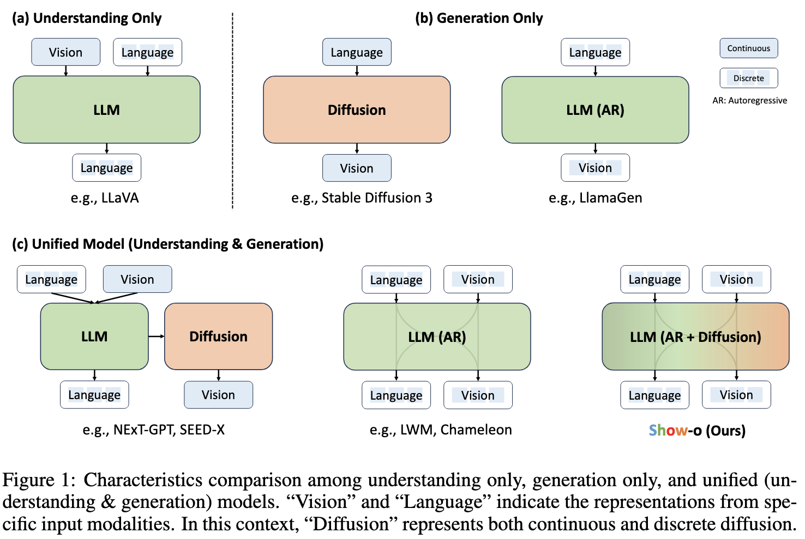

Show-o: One Single Transformer To Unify Multimodal Understanding and Generation
Show Lab, National University of Singapore
* Equal Contribution
✉ Corresponding Author
Abstract
We present a unified transformer, i.e., Show-o, that unifies multimodal understanding and generation. Unlike fully autoregressive models, Show-o unifies au toregressive and (discrete) diffusion modeling to adaptively handle inputs and outputs of various and mixed modalities. The unified model flexibly supports a wide range of vision-language tasks including visual question-answering, text-to-image generation, text-guided inpainting/extrapolation, and mixed-modality generation. Across various benchmarks, it demonstrates comparable or superior performance to existing individual models tailored for understanding or generation, which with an equivalent or larger number of parameters. This signifiantly highlights its potential as a next-generation foundation model. Code and models are released at https://github.com/showlab/Show-o.
What's new of Show-o?
Text-to-Image Results

Multimodal Understanding Results

Inpainting Results

Extrapolation Results